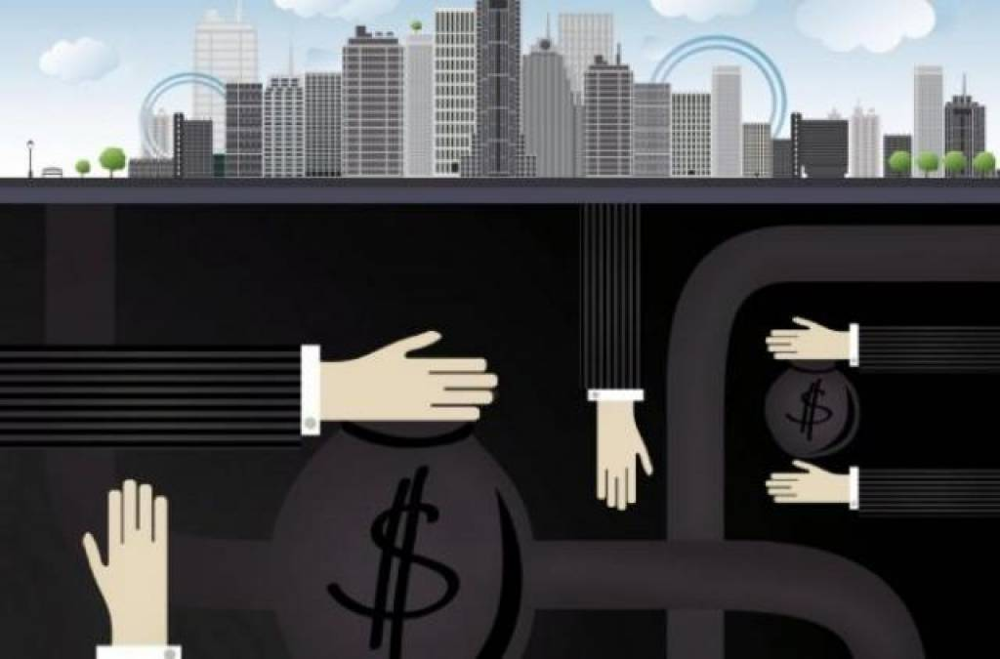

Структура теневой экономики
Теневая экономика: Невидимая сила, формирующая мир
Теневая экономика — это сложный и многогранный феномен, существующий в той или иной степени в каждой стране
мира. Это вся хозяйственная деятельность, которая скрывается от государства и не фиксируется официальной
статистикой. Её часто называют неформальной, скрытой, нелегальной или серой экономикой, и она представляет собой
мощную силу, оказывающую значительное влияние на общество, бизнес и государство.

Что скрывается в тени? Формы теневой экономики
Теневая экономика неоднородна и включает в себя несколько уровней:
- «Серая» экономика (неофициальная): Это законная по сути деятельность, которая скрывается от учёта и налогообложения.
- Примеры: Неофициальная занятость (репетитор, строитель, работа без трудового договора), выплата зарплаты «в конвертах», мелкое предпринимательство без регистрации (например, продажа домашней еды или вязанных вещей), бартер между предприятиями.
- «Чёрная» экономика (криминальная): Это запрещённая законом деятельность.
- Примеры: Торговля оружием или наркотиками, контрабанда, рэкет, мошенничество, коррупция, незаконная добыча и торговля ресурсами.
- «Белая» экономика (неформальная): Это деятельность, которая в принципе не требует официального оформления и часто направлена на самозанятость и выживание.
- Примеры: Наём соседа для помощи на даче, продажа выращенных на своём огороде овощей, оказание мелких услуг знакомым.
Почему она существует? Причины возникновения
Главный двигатель теневой экономики — экономическая выгода. Но к ней предпринимателей и граждан толкает ряд факторов:
- Высокие налоги и взносы: Желание избежать черезмерного налогового бремени и сохранить большую часть прибыли.
- Чрезмерное регулирование: Сложные, долгие и бюрократизированные процедуры ведения легального бизнеса (получение лицензий, проверки).
- Коррупция: Когда чиновники сами предлагают «обойти» закон за взятку.
- Неэффективность государственных институтов: Недоверие к государству, судебной системе и правоохранительным органам.
- Экономические кризисы и безработица: Когда люди уходят в тень, чтобы просто заработать на жизнь.
- Спрос на запрещённые товары и услуги: Всегда существующий рынок для нелегальных услуг.
Двойные последствия: Чем опасна и… полезна?
Негативное влияние:
- Для государства: Недополучение налогов, что ведёт к дефициту бюджета и снижению финансирования социальных сфер (медицина, образование).
- Для легального бизнеса: Недобросовестная конкуренция, так как нелегальные компании могут предлагать низкие цены за счёт экономии на налогах и соблюдении стандартов.
- Для работников: Отсутствие социальных гарантий (пенсионные отчисления, оплачиваемый отпуск, больничный), нестабильность и эксплуатация.
- Для общества: Подрыв доверия к государству и правовым нормам, рост коррупции и криминала.
Условно-позитивные аспекты (функции):
- Социальный амортизатор: Смягчает последствия экономических кризисов, давая людям возможность заработать и выжить.
- Стимул для развития: Создаёт давление на государство с целью снижения налогов и упрощения регулирования для того, чтобы вернуть бизнес в правовое поле.
- Гибкость: Быстро удовлетворяет спрос на те товары и услуги, которые легальный рынок предложить не может или не успевает.
Борьба с тенью: Возможные решения
Полностью искоренить теневую экономику невозможно, но можно сократить её масштабы. Для этого необходим комплексный подход:
- Упрощение налоговой системы: Введение понятных и низких налогов (например, прогрессивная шкала или универсальные вычеты).
- Дерегулирование: Сокращение административных барьеров для бизнеса.
- Борьба с коррупцией: Повышение прозрачности госаппарата и ужесточение наказаний.
- Легализация неформальной занятости: Создание гибких форм трудоустройства и стимулов для работодателей и сотрудников выходить из тени.
- Усиление контроля: Совершенствование работы налоговых и правоохранительных органов, внедрение цифровых технологий для отслеживания финансовых потоков (например, онлайн-кассы).
В итоге, теневая экономика — это симптом дисбаланса в отношениях между государством, бизнесом и обществом. Она
является одновременно и проблемой, и индикатором, показывающим, где система нуждается в реформах и большей гибкости.
Понимание её причин и последствий — ключ к построению более здоровой и справедливой экономической модели.